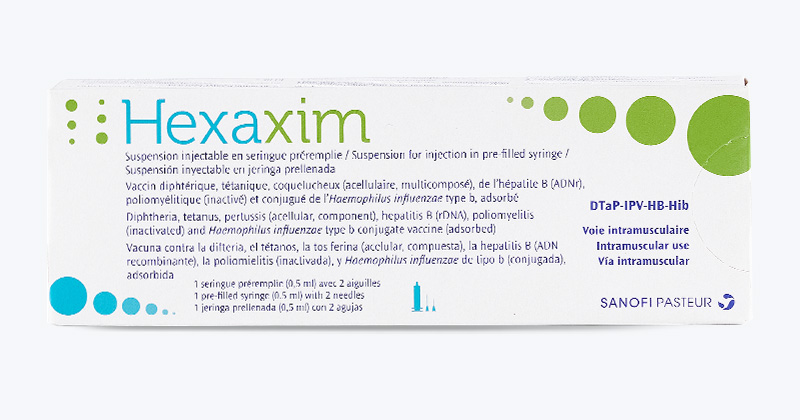

THÔNG TIN VẮC XIN
Giới thiệu vắc xin Hexaxim
Hexaxim là vắc xin phối hợp 6 trong 1, giúp phòng ngừa bạch hầu, ho gà, uốn ván, viêm gan B, bại liệt và Hib.
Thông tin bệnh lý
- Bạch hầu: Vi khuẩn gây tổn thương tim, thận, hệ thần kinh, có thể tử vong.
- Uốn ván: Vi khuẩn xâm nhập qua vết thương, gây co cứng cơ, khó thở.
- Ho gà: Gây ho kéo dài, có thể dẫn đến viêm phổi, co giật, tổn thương não.
- Viêm gan B: Virus HBV gây viêm gan mạn, xơ gan, ung thư gan.
- Bại liệt: Virus Polio gây liệt vĩnh viễn hoặc tử vong.
- Vi khuẩn Hib: Gây viêm màng não, viêm phổi, viêm tai giữa.
Lịch tiêm chủng
- Mũi 1: Lần đầu tiên tiêm
- Mũi 2: 1 tháng đầu sau khi tiêm mũi 1
- Mũi 3: 1 tháng sau khi tiêm mũi 2
- Mũi 4: 12 tháng sau khi tiêm mũi 3
Chống chỉ định
Không tiêm cho trẻ dị ứng với thành phần vắc xin, có phản ứng nặng sau mũi trước, hoặc mắc bệnh lý thần kinh tiến triển.
Phản ứng sau tiêm
Có thể sốt nhẹ, sưng đỏ tại chỗ tiêm. Cần theo dõi và đưa trẻ đến cơ sở y tế nếu có phản ứng nặng.